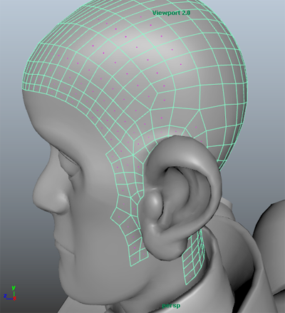
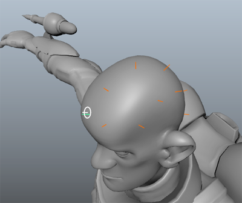
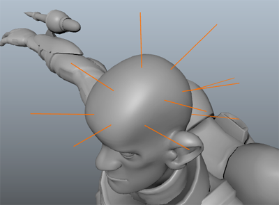

- 选择角色头部的头皮区域，然后选择“XGen > 创建描述”(XGen > Create Description)。 提示： 如果使用基于导向的工作流，请将样条线添加到仅定义角色头部头皮区域的多边形网格。执行此操作使您可以更好地控制使用曲线填充的网格区域。
- 在“XGen”窗口中，设置以下内容：
- 此描述将生成什么类型的基本体？(What kind of Primitives are made by this Description?)设置为“样条线(用于长头发、藤等)”(Splines (use for long hair, vines, etc))。
- “生成基本体”(Generate the Primitives)设置为“随机横跨曲面”(Randomly across the surface)。
- “基本体的控制方式”(Control the Primitives by)设置为“放置和成形导向”(Placing and shaping Guides)。
- 单击“创建”(Create)。
网格现已绑定到描述。使用“添加导向”工具在网格曲面上放置导向。
 - 在 XGen 工具栏上，单击图标
 以选择“添加或移动导向”(Add or Move Guides)工具。
以选择“添加或移动导向”(Add or Move Guides)工具。 - 单击网格上的区域以放置导向。
在您希望显示样条线的区域中，放置至少一个导向。您无需使用导向覆盖网格以在整个网格上生成样条线。对于此工作流示例，一半头皮上放置了 10 到 15 个导向。
在随后的工作流中，将使用“镜像选定导向”(Mirror Selected Guides)将导向镜像到另一侧。
 - 在“大纲视图”(Outliner)中，展开描述的内容以查看由图标和 ID 标识的每个导向。
 -选择导向。
-选择导向。 - 在 Maya 工具箱中，选择“缩放”(Scale)工具并缩放导向以设置头发长度。 
您可能注意到，需要旋转某些导向，以便更好地跟随角色头部的轮廓。
- （可选）选择“旋转”(Rotate)工具，然后调整未从网格曲面正确投影的导向。